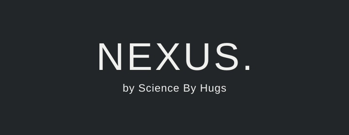
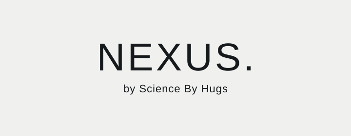
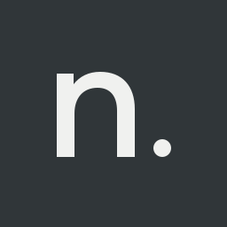

Brand portfolio / October 19, 2026
Presence at launch.
Clarity everywhere.
NEXUS 2.0 pairs a cinematic entrance with a calm storefront. This review translates the approved Slate direction into a proposed system for iOS, Android and web.
A = approved foundation. P = proposed choice. B = blocked asset. Examples are proposals unless marked A or explicitly owner-approved. No product render or physical packaging is represented.
Read the complete guide · Review evidence and approvals
01 / Identity · P01–P02
Quiet confidence.

Primary dark lockup · live-text study

Reversed light application · live-text study
n. app icon · ApprovedSimply n.

A lowercase n. Dark Slate on Muted (#A8B0B2). No enclosing symbol or added motif.
Visual design approved October 19, 2026. Production device and platform export checks remain pending.
64 / 48 / 32 px specimens. Final device and export checks pending.
Identity rules
Protect half a cap-height of clear space. Keep the endorsement legible. Preserve proportions and use monochrome reproduction.
Approval needed: terminal dot, logo construction, monogram and final asset workflow.
02 / Slate · A02
Five colors. Clear roles.
The palette and core roles are approved. Semantic assignments, focus treatment and state recipes are proposals. See calculated contrast results.
03 / Typography · P03
Editorial scale.
Everyday legibility.
Featured collection / example
Considered in
every detail.
A system sans keeps the interface familiar. Larger, restrained headings carry the editorial voice.
Scale and rhythm
Display 56/60 · H1 40/48 · H2 28/36
Body 16/24 · Supporting 14/20
Phone display 40/44 and H1 32/40. User scaling always takes precedence. No paid font dependency proposed.
Spacing: 4 / 8 / 12 / 16 / 24 / 32 / 48 / 64 / 96
04 / Interface recipes · P04–P05
The product leads.
Verified product assetPending real packaging references
No illustrative vial supplied
{Verified product name}
{Verified variant and quantity}
{Current price and currency}
Add to bagNoninteractive specimen · 4:5 image region
Actions and fields
ContinueView detailsVisual specimens, not functional controls
Email address
{Customer input}
Persistent label · visible boundary · 48 minimum target
We couldn’t update your bag. Please try again.
Feedback stays clear.
Use explicit state text with a meaningful icon. Avoid new accent colors until approved. Focus, loading, disabled and error states are specified in the guide.
05 / Image and motion · A04–A05 + P06
Authenticity before spectacle.
Reference → render → approval
Photorealistic renders must reproduce the actual package, label, closure, proportions and materials. Exact label artwork is required.
Blocked: packaging photos, dimensions, label files, SKU mapping and a named fidelity reviewer.
Proposed 2.4-second opening
Slate and soft light → verified vial resolves → wordmark → storefront.
Skip immediately. No autoplay audio. Reduced motion uses a still. Returning visits go straight to browsing. No animation included until packaging is verified.
06 / Cross-platform · P04–P05
One identity. Native behavior.
| Compact | Medium | Wide |
|---|
20 gutter
4 columns
One or two product cards | 32 gutter
8 columns
Three cards where readable | 48 gutter
12 columns
1280 maximum width |
Web breakpoints 600 / 1024 CSS px. Content can collapse earlier for large text. Shared 48-unit touch target proposal; native safe areas, scalable text, screen readers and back behavior remain platform-specific.
07 / Approval and handoff
Establish the source of truth.
- Review and approve P01–P08 in the decision record.
- Recover the missing earlier blueprint, parent-brand masters and actual packaging sources.
- Produce and sign off final identity masters and per-SKU imagery.
- Use brand/ in ScienceByHugs/Nexus as the owner-designated source of truth. Runtime migration remains a separate change.
The accessible thread exposed decisions 27–29, not the full 29-decision set. Application code and configuration were not changed.
Design tokens · Asset inventory · Content template · Asset brief · Review template